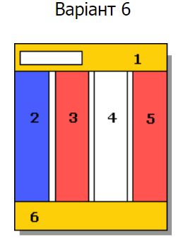

Завдання:

HTML код таблиці:
<section class="content">
<header class="box">
<div class="search">0</div>
<div>1</div>
</header>
<nav class="box main">2</nav>
<aside class="box main box-3">3</aside>
<article class="box main">4</article>
<aside class="box main box-5">5</aside>
<footer class="box">6</footer>
</section>
CSS код таблиці:
.content {
display: grid;
column-gap: 1em;
background-color: black;
height: 100%;
grid-template-areas:
"header header header header"
"nav side1 article side2"
"footer footer footer footer";
}
.box {
padding: 2em;
}
.main {
height: 300px;
}
header, footer {
background-color: #ffc918;
}
aside {
background-color: #f7465d;
}
.box-3 {
grid-area: side1;
}
.box-5 {
grid-area: side2;
}
nav {
background-color: #46a7f7;
grid-area: nav;
}
article {
background-color: white;
grid-area: article;
}
header {
grid-area: header;
}
footer {
grid-area: footer;
}
header div {
padding: 1em;
display: inline-block;
}
.search {
background-color: white;
border: 1px solid black;
width: 300px;
}
Результат: